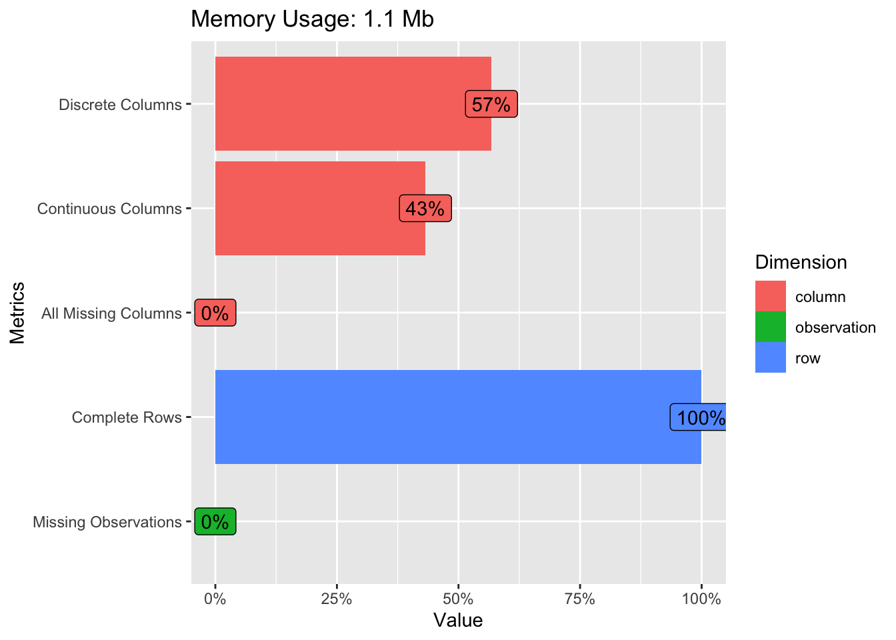
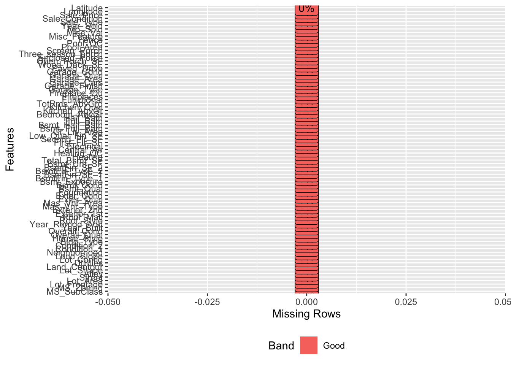
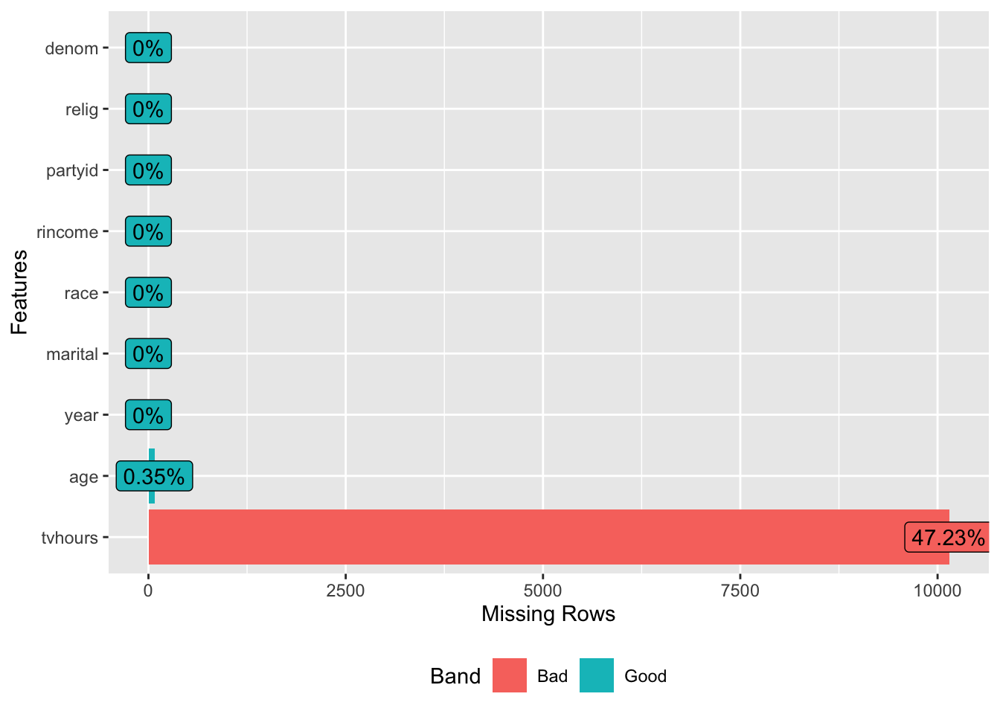

Chapter 9 Exploratory Data Analysis (EDA)
EDA is an informal process to have an inital investigation of the data. EDA is an important part of any data analysis. For example, data cleaning is just one application of EDA: you ask questions about whether your data meets your expectations or not. To do data cleaning, you’ll need to deploy all the tools of EDA: visualisation, transformation, and modelling.
The main steps in exploratory data analysis are:
- Getting the data
- Dataset Overview
- Visualization
- Identifying missing values
- Distibution of data: variations
- Correlated variables
9.1 Getting the data
We will use the same data set, Ames Housing Price data from the AmesHousing package, containing 2930 observations and 81 features including the sale date and price.
library(AmesHousing)
library(dplyr)##
## Attaching package: 'dplyr'## The following objects are masked from 'package:stats':
##
## filter, lag## The following objects are masked from 'package:base':
##
## intersect, setdiff, setequal, unionlibrary(DataExplorer)
amesdata <- make_ames()
introduce(amesdata)## # A tibble: 1 × 9
## rows columns discrete_columns conti…¹ all_m…² total…³ compl…⁴ total…⁵ memor…⁶
## <int> <int> <int> <int> <int> <int> <int> <int> <dbl>
## 1 2930 81 46 35 0 0 2930 237330 1146920
## # … with abbreviated variable names ¹continuous_columns, ²all_missing_columns,
## # ³total_missing_values, ⁴complete_rows, ⁵total_observations, ⁶memory_usageglimpse(amesdata)## Rows: 2,930
## Columns: 81
## $ MS_SubClass <fct> One_Story_1946_and_Newer_All_Styles, One_Story_1946…
## $ MS_Zoning <fct> Residential_Low_Density, Residential_High_Density, …
## $ Lot_Frontage <dbl> 141, 80, 81, 93, 74, 78, 41, 43, 39, 60, 75, 0, 63,…
## $ Lot_Area <int> 31770, 11622, 14267, 11160, 13830, 9978, 4920, 5005…
## $ Street <fct> Pave, Pave, Pave, Pave, Pave, Pave, Pave, Pave, Pav…
## $ Alley <fct> No_Alley_Access, No_Alley_Access, No_Alley_Access, …
## $ Lot_Shape <fct> Slightly_Irregular, Regular, Slightly_Irregular, Re…
## $ Land_Contour <fct> Lvl, Lvl, Lvl, Lvl, Lvl, Lvl, Lvl, HLS, Lvl, Lvl, L…
## $ Utilities <fct> AllPub, AllPub, AllPub, AllPub, AllPub, AllPub, All…
## $ Lot_Config <fct> Corner, Inside, Corner, Corner, Inside, Inside, Ins…
## $ Land_Slope <fct> Gtl, Gtl, Gtl, Gtl, Gtl, Gtl, Gtl, Gtl, Gtl, Gtl, G…
## $ Neighborhood <fct> North_Ames, North_Ames, North_Ames, North_Ames, Gil…
## $ Condition_1 <fct> Norm, Feedr, Norm, Norm, Norm, Norm, Norm, Norm, No…
## $ Condition_2 <fct> Norm, Norm, Norm, Norm, Norm, Norm, Norm, Norm, Nor…
## $ Bldg_Type <fct> OneFam, OneFam, OneFam, OneFam, OneFam, OneFam, Twn…
## $ House_Style <fct> One_Story, One_Story, One_Story, One_Story, Two_Sto…
## $ Overall_Qual <fct> Above_Average, Average, Above_Average, Good, Averag…
## $ Overall_Cond <fct> Average, Above_Average, Above_Average, Average, Ave…
## $ Year_Built <int> 1960, 1961, 1958, 1968, 1997, 1998, 2001, 1992, 199…
## $ Year_Remod_Add <int> 1960, 1961, 1958, 1968, 1998, 1998, 2001, 1992, 199…
## $ Roof_Style <fct> Hip, Gable, Hip, Hip, Gable, Gable, Gable, Gable, G…
## $ Roof_Matl <fct> CompShg, CompShg, CompShg, CompShg, CompShg, CompSh…
## $ Exterior_1st <fct> BrkFace, VinylSd, Wd Sdng, BrkFace, VinylSd, VinylS…
## $ Exterior_2nd <fct> Plywood, VinylSd, Wd Sdng, BrkFace, VinylSd, VinylS…
## $ Mas_Vnr_Type <fct> Stone, None, BrkFace, None, None, BrkFace, None, No…
## $ Mas_Vnr_Area <dbl> 112, 0, 108, 0, 0, 20, 0, 0, 0, 0, 0, 0, 0, 0, 0, 6…
## $ Exter_Qual <fct> Typical, Typical, Typical, Good, Typical, Typical, …
## $ Exter_Cond <fct> Typical, Typical, Typical, Typical, Typical, Typica…
## $ Foundation <fct> CBlock, CBlock, CBlock, CBlock, PConc, PConc, PConc…
## $ Bsmt_Qual <fct> Typical, Typical, Typical, Typical, Good, Typical, …
## $ Bsmt_Cond <fct> Good, Typical, Typical, Typical, Typical, Typical, …
## $ Bsmt_Exposure <fct> Gd, No, No, No, No, No, Mn, No, No, No, No, No, No,…
## $ BsmtFin_Type_1 <fct> BLQ, Rec, ALQ, ALQ, GLQ, GLQ, GLQ, ALQ, GLQ, Unf, U…
## $ BsmtFin_SF_1 <dbl> 2, 6, 1, 1, 3, 3, 3, 1, 3, 7, 7, 1, 7, 3, 3, 1, 3, …
## $ BsmtFin_Type_2 <fct> Unf, LwQ, Unf, Unf, Unf, Unf, Unf, Unf, Unf, Unf, U…
## $ BsmtFin_SF_2 <dbl> 0, 144, 0, 0, 0, 0, 0, 0, 0, 0, 0, 0, 0, 0, 1120, 0…
## $ Bsmt_Unf_SF <dbl> 441, 270, 406, 1045, 137, 324, 722, 1017, 415, 994,…
## $ Total_Bsmt_SF <dbl> 1080, 882, 1329, 2110, 928, 926, 1338, 1280, 1595, …
## $ Heating <fct> GasA, GasA, GasA, GasA, GasA, GasA, GasA, GasA, Gas…
## $ Heating_QC <fct> Fair, Typical, Typical, Excellent, Good, Excellent,…
## $ Central_Air <fct> Y, Y, Y, Y, Y, Y, Y, Y, Y, Y, Y, Y, Y, Y, Y, Y, Y, …
## $ Electrical <fct> SBrkr, SBrkr, SBrkr, SBrkr, SBrkr, SBrkr, SBrkr, SB…
## $ First_Flr_SF <int> 1656, 896, 1329, 2110, 928, 926, 1338, 1280, 1616, …
## $ Second_Flr_SF <int> 0, 0, 0, 0, 701, 678, 0, 0, 0, 776, 892, 0, 676, 0,…
## $ Low_Qual_Fin_SF <int> 0, 0, 0, 0, 0, 0, 0, 0, 0, 0, 0, 0, 0, 0, 0, 0, 0, …
## $ Gr_Liv_Area <int> 1656, 896, 1329, 2110, 1629, 1604, 1338, 1280, 1616…
## $ Bsmt_Full_Bath <dbl> 1, 0, 0, 1, 0, 0, 1, 0, 1, 0, 0, 1, 0, 1, 1, 1, 0, …
## $ Bsmt_Half_Bath <dbl> 0, 0, 0, 0, 0, 0, 0, 0, 0, 0, 0, 0, 0, 0, 0, 0, 0, …
## $ Full_Bath <int> 1, 1, 1, 2, 2, 2, 2, 2, 2, 2, 2, 2, 2, 1, 1, 3, 2, …
## $ Half_Bath <int> 0, 0, 1, 1, 1, 1, 0, 0, 0, 1, 1, 0, 1, 1, 1, 1, 0, …
## $ Bedroom_AbvGr <int> 3, 2, 3, 3, 3, 3, 2, 2, 2, 3, 3, 3, 3, 2, 1, 4, 4, …
## $ Kitchen_AbvGr <int> 1, 1, 1, 1, 1, 1, 1, 1, 1, 1, 1, 1, 1, 1, 1, 1, 1, …
## $ Kitchen_Qual <fct> Typical, Typical, Good, Excellent, Typical, Good, G…
## $ TotRms_AbvGrd <int> 7, 5, 6, 8, 6, 7, 6, 5, 5, 7, 7, 6, 7, 5, 4, 12, 8,…
## $ Functional <fct> Typ, Typ, Typ, Typ, Typ, Typ, Typ, Typ, Typ, Typ, T…
## $ Fireplaces <int> 2, 0, 0, 2, 1, 1, 0, 0, 1, 1, 1, 0, 1, 1, 0, 1, 0, …
## $ Fireplace_Qu <fct> Good, No_Fireplace, No_Fireplace, Typical, Typical,…
## $ Garage_Type <fct> Attchd, Attchd, Attchd, Attchd, Attchd, Attchd, Att…
## $ Garage_Finish <fct> Fin, Unf, Unf, Fin, Fin, Fin, Fin, RFn, RFn, Fin, F…
## $ Garage_Cars <dbl> 2, 1, 1, 2, 2, 2, 2, 2, 2, 2, 2, 2, 2, 2, 2, 3, 2, …
## $ Garage_Area <dbl> 528, 730, 312, 522, 482, 470, 582, 506, 608, 442, 4…
## $ Garage_Qual <fct> Typical, Typical, Typical, Typical, Typical, Typica…
## $ Garage_Cond <fct> Typical, Typical, Typical, Typical, Typical, Typica…
## $ Paved_Drive <fct> Partial_Pavement, Paved, Paved, Paved, Paved, Paved…
## $ Wood_Deck_SF <int> 210, 140, 393, 0, 212, 360, 0, 0, 237, 140, 157, 48…
## $ Open_Porch_SF <int> 62, 0, 36, 0, 34, 36, 0, 82, 152, 60, 84, 21, 75, 0…
## $ Enclosed_Porch <int> 0, 0, 0, 0, 0, 0, 170, 0, 0, 0, 0, 0, 0, 0, 0, 0, 0…
## $ Three_season_porch <int> 0, 0, 0, 0, 0, 0, 0, 0, 0, 0, 0, 0, 0, 0, 0, 0, 0, …
## $ Screen_Porch <int> 0, 120, 0, 0, 0, 0, 0, 144, 0, 0, 0, 0, 0, 0, 140, …
## $ Pool_Area <int> 0, 0, 0, 0, 0, 0, 0, 0, 0, 0, 0, 0, 0, 0, 0, 0, 0, …
## $ Pool_QC <fct> No_Pool, No_Pool, No_Pool, No_Pool, No_Pool, No_Poo…
## $ Fence <fct> No_Fence, Minimum_Privacy, No_Fence, No_Fence, Mini…
## $ Misc_Feature <fct> None, None, Gar2, None, None, None, None, None, Non…
## $ Misc_Val <int> 0, 0, 12500, 0, 0, 0, 0, 0, 0, 0, 0, 500, 0, 0, 0, …
## $ Mo_Sold <int> 5, 6, 6, 4, 3, 6, 4, 1, 3, 6, 4, 3, 5, 2, 6, 6, 6, …
## $ Year_Sold <int> 2010, 2010, 2010, 2010, 2010, 2010, 2010, 2010, 201…
## $ Sale_Type <fct> WD , WD , WD , WD , WD , WD , WD , WD , WD , WD , W…
## $ Sale_Condition <fct> Normal, Normal, Normal, Normal, Normal, Normal, Nor…
## $ Sale_Price <int> 215000, 105000, 172000, 244000, 189900, 195500, 213…
## $ Longitude <dbl> -93.61975, -93.61976, -93.61939, -93.61732, -93.638…
## $ Latitude <dbl> 42.05403, 42.05301, 42.05266, 42.05125, 42.06090, 4…9.2 Visualization
9.2.1 Looking into
amesdata %>% plot_intro()
amesdata %>% plot_missing() Yes, our data is “clean” but how about this:
library(forcats)
gss_cat %>% glimpse()## Rows: 21,483
## Columns: 9
## $ year <int> 2000, 2000, 2000, 2000, 2000, 2000, 2000, 2000, 2000, 2000, 20…
## $ marital <fct> Never married, Divorced, Widowed, Never married, Divorced, Mar…
## $ age <int> 26, 48, 67, 39, 25, 25, 36, 44, 44, 47, 53, 52, 52, 51, 52, 40…
## $ race <fct> White, White, White, White, White, White, White, White, White,…
## $ rincome <fct> $8000 to 9999, $8000 to 9999, Not applicable, Not applicable, …
## $ partyid <fct> "Ind,near rep", "Not str republican", "Independent", "Ind,near…
## $ relig <fct> Protestant, Protestant, Protestant, Orthodox-christian, None, …
## $ denom <fct> "Southern baptist", "Baptist-dk which", "No denomination", "No…
## $ tvhours <int> 12, NA, 2, 4, 1, NA, 3, NA, 0, 3, 2, NA, 1, NA, 1, 7, NA, 3, 3…gss_cat %>% plot_missing()
gss_cat %>% profile_missing()## # A tibble: 9 × 3
## feature num_missing pct_missing
## <fct> <int> <dbl>
## 1 year 0 0
## 2 marital 0 0
## 3 age 76 0.00354
## 4 race 0 0
## 5 rincome 0 0
## 6 partyid 0 0
## 7 relig 0 0
## 8 denom 0 0
## 9 tvhours 10146 0.472See the data source here: https://forcats.tidyverse.org/reference/gss_cat.html
9.3 Variation & Correlation
The “near-zero-variance” predictors may need to be identified and eliminated prior to modeling. We use the package caret to identify “near-zero-variance” variables:
To identify these types of predictors, the following two metrics can be calculated:
the frequency of the most prevalent value over the second most frequent value (called the “frequency ratio’’), which would be near one for well-behaved predictors and very large for highly-unbalanced data and the “percent of unique values’’ is the number of unique values divided by the total number of samples (times 100) that approaches zero as the granularity of the data increases
If the frequency ratio is greater than a pre-specified threshold and the unique value percentage is less than a threshold, we might consider a predictor to be near zero-variance.
caret::nearZeroVar(amesdata, saveMetrics= TRUE)## freqRatio percentUnique zeroVar nzv
## MS_SubClass 1.876522 0.54607509 FALSE FALSE
## MS_Zoning 4.919913 0.23890785 FALSE FALSE
## Lot_Frontage 1.775362 4.40273038 FALSE FALSE
## Lot_Area 1.023256 66.89419795 FALSE FALSE
## Street 243.166667 0.06825939 FALSE TRUE
## Alley 22.766667 0.10238908 FALSE TRUE
## Lot_Shape 1.898876 0.13651877 FALSE FALSE
## Land_Contour 21.941667 0.13651877 FALSE TRUE
## Utilities 1463.500000 0.10238908 FALSE TRUE
## Lot_Config 4.187867 0.17064846 FALSE FALSE
## Land_Slope 22.312000 0.10238908 FALSE TRUE
## Neighborhood 1.659176 0.95563140 FALSE FALSE
## Condition_1 15.378049 0.30716724 FALSE FALSE
## Condition_2 223.076923 0.27303754 FALSE TRUE
## Bldg_Type 10.407725 0.17064846 FALSE FALSE
## House_Style 1.696449 0.27303754 FALSE FALSE
## Overall_Qual 1.127049 0.34129693 FALSE FALSE
## Overall_Cond 3.103189 0.30716724 FALSE FALSE
## Year_Built 1.028986 4.02730375 FALSE FALSE
## Year_Remod_Add 1.787129 2.08191126 FALSE FALSE
## Roof_Style 4.212341 0.20477816 FALSE FALSE
## Roof_Matl 125.521739 0.27303754 FALSE TRUE
## Exterior_1st 2.280000 0.54607509 FALSE FALSE
## Exterior_2nd 2.270694 0.58020478 FALSE FALSE
## Mas_Vnr_Type 2.017045 0.17064846 FALSE FALSE
## Mas_Vnr_Area 118.066667 15.18771331 FALSE FALSE
## Exter_Qual 1.819009 0.13651877 FALSE FALSE
## Exter_Cond 8.525084 0.17064846 FALSE FALSE
## Foundation 1.053055 0.20477816 FALSE FALSE
## Bsmt_Qual 1.052502 0.20477816 FALSE FALSE
## Bsmt_Cond 21.442623 0.20477816 FALSE TRUE
## Bsmt_Exposure 4.559809 0.17064846 FALSE FALSE
## BsmtFin_Type_1 1.009401 0.23890785 FALSE FALSE
## BsmtFin_SF_1 1.009401 0.27303754 FALSE FALSE
## BsmtFin_Type_2 23.575472 0.23890785 FALSE TRUE
## BsmtFin_SF_2 515.800000 9.35153584 FALSE TRUE
## Bsmt_Unf_SF 12.894737 38.80546075 FALSE FALSE
## Total_Bsmt_SF 1.081081 36.10921502 FALSE FALSE
## Heating 106.851852 0.20477816 FALSE TRUE
## Heating_QC 1.730324 0.17064846 FALSE FALSE
## Central_Air 13.948980 0.06825939 FALSE FALSE
## Electrical 14.265957 0.20477816 FALSE FALSE
## First_Flr_SF 1.642857 36.96245734 FALSE FALSE
## Second_Flr_SF 72.956522 21.67235495 FALSE FALSE
## Low_Qual_Fin_SF 722.500000 1.22866894 FALSE TRUE
## Gr_Liv_Area 1.576923 44.09556314 FALSE FALSE
## Bsmt_Full_Bath 1.447079 0.13651877 FALSE FALSE
## Bsmt_Half_Bath 16.111111 0.10238908 FALSE FALSE
## Full_Bath 1.162367 0.17064846 FALSE FALSE
## Half_Bath 1.735405 0.10238908 FALSE FALSE
## Bedroom_AbvGr 2.149394 0.27303754 FALSE FALSE
## Kitchen_AbvGr 21.674419 0.13651877 FALSE TRUE
## Kitchen_Qual 1.287931 0.17064846 FALSE FALSE
## TotRms_AbvGrd 1.300462 0.47781570 FALSE FALSE
## Functional 38.971429 0.27303754 FALSE TRUE
## Fireplaces 1.116170 0.17064846 FALSE FALSE
## Fireplace_Qu 1.911290 0.20477816 FALSE FALSE
## Garage_Type 2.213555 0.23890785 FALSE FALSE
## Garage_Finish 1.516010 0.13651877 FALSE FALSE
## Garage_Cars 2.060411 0.20477816 FALSE FALSE
## Garage_Area 1.628866 20.58020478 FALSE FALSE
## Garage_Qual 16.446541 0.20477816 FALSE FALSE
## Garage_Cond 16.761006 0.20477816 FALSE FALSE
## Paved_Drive 12.277778 0.10238908 FALSE FALSE
## Wood_Deck_SF 20.621622 12.96928328 FALSE FALSE
## Open_Porch_SF 25.000000 8.60068259 FALSE TRUE
## Enclosed_Porch 112.318182 6.24573379 FALSE TRUE
## Three_season_porch 964.333333 1.05802048 FALSE TRUE
## Screen_Porch 205.692308 4.12969283 FALSE TRUE
## Pool_Area 2917.000000 0.47781570 FALSE TRUE
## Pool_QC 729.250000 0.17064846 FALSE TRUE
## Fence 7.145455 0.17064846 FALSE FALSE
## Misc_Feature 29.726316 0.20477816 FALSE TRUE
## Misc_Val 157.055556 1.29692833 FALSE TRUE
## Mo_Sold 1.124722 0.40955631 FALSE FALSE
## Year_Sold 1.070988 0.17064846 FALSE FALSE
## Sale_Type 10.610879 0.34129693 FALSE FALSE
## Sale_Condition 9.848980 0.20477816 FALSE FALSE
## Sale_Price 1.030303 35.22184300 FALSE FALSE
## Longitude 1.000000 74.12969283 FALSE FALSE
## Latitude 1.111111 67.57679181 FALSE FALSEAgain, using the package caret:
While there are some models that thrive on correlated predictors (such as pls), other models may benefit from reducing the level of correlation between the predictors.
Given a correlation matrix, the
findCorrelationfunction uses the following algorithm to flag predictors for removal:
#descrCor <- cor(gss_cat)
#highCorr <- sum(abs(descrCor[upper.tri(descrCor)]) > .999)9.4 RMarkdown
R Markdown provides an excellent platform for authoring your data science projects (like EDA’s) combining your codes, their results, and your commentary. R Markdown documents support multiple output formats: HTML, PDFs, Word files, slideshows, and more.
Here are some examples
- html output: https://raw.githack.com/yaydede/Blog_posts/main/EDA.html
- pdf output: https://yaydede.github.io/files/CV6.pdf
You can use R Markdown in many ways but here are the few main ways:
- For communicating to decision makers who want to focus on the conclusions, not the code behind the analysis.
- For collaborating with those, who are interested in both your conclusions and the codes.
- As a nice notebook where you can capture not only what you did, but also what you were thinking.
- As a scientific manuscript using Latex: https://www.marianamontes.me/post/academic-writing-in-r-markdown-i/
- A book with Bookdown: https://yaydede.github.io/ToolShed/
- As a blog with Blogdown: https://shilaan.rbind.io/post/building-your-website-using-r-blogdown/
- As a good
htmlsupport for your website: https://yaydede.github.io
Our package RBootcamp has a template: Worksheet1. Locate it at File > New File > R Markdown > Template. It will give you a good starting point